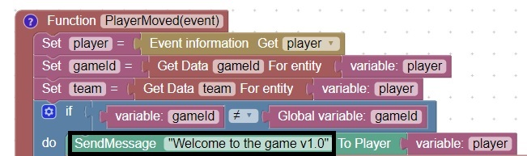
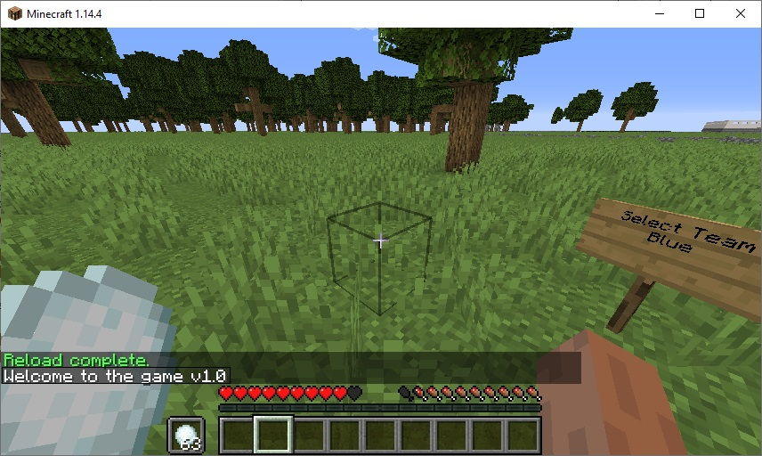

Create Version
Sometimes when we make a code change we are not sure that the server picked it up.
This problem can occur if the code is saved to the wrong directory, or the code was not saved before reload
In order to give us confidence that the correct code is being run, we can add a version statement to our welcome message
Every time we change the code, we can change the version statement and look for that message on startup

You should see this message after reload:

Modify the version, save and reload. Did the version change?